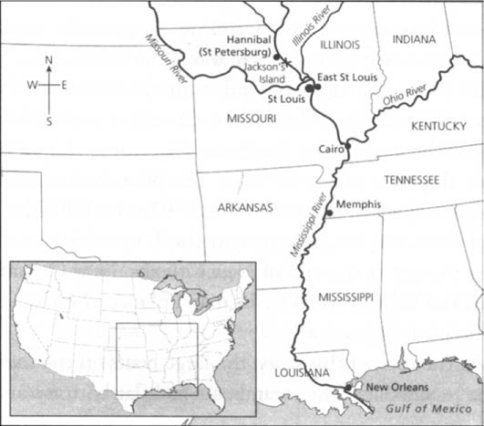

Ghi chú về tác giả
Ghi chú về câu chuyện này
Những nhân vật trong câu chuyện này
1 Nhà văn không biết mọi thứ!
2 Căn nhà gỗ trong rừng
3 Hai kẻ bỏ nhà ra đi
4 Trên bè
5 Những quyết định
6 Nhà vua và công tước
7 Những kẻ lừa đảo thâm hiểm
8 Chiếc quan tài
9 Nhiều anh em hơn!
10 Tom Sawyer
